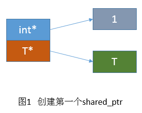
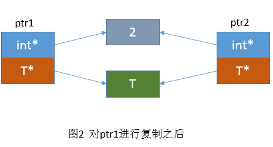

引言
在编程语言日新月异的今天，像C++这种没用垃圾回收的语言，看上去似乎有点太不友好了。内存泄露、越界、野指针让C++备受诟病。其实不然，boost早就实现了智能指针，如今也纳入了C++标准。如果能加以恰当运用，个人觉得，想出问题都难。真正的C++11代码，几乎不应该出现new和delete这样的字眼（禁用函数的delete除外）。
本文先简单介绍一下场景，然后从0开始编写工业级的C++智能指针，实现C++11的sharedptr和weakptr的所有功能。 （原谅我吹牛，毕竟该智能指针至今已经在QQ音视频服务器里稳定运行了4年）
当然，编写只是为了熟悉掌握原理，知其然知其所以然，并不鼓励使用。毕竟现在都在std名字空间下了。当年QQ后台受限于老C++以及不能引入boost，我也是被迫手撸的。
场景1
假如你在编写一个多线程网络库，其中有recv线程，send线程，它们都需要共同操作同一个socket对象。于是在recv和send线程中，分别有这样的类似代码：
class RecvThread {
std::map<int, Socket* > sockets_;
};
然后，socket远端关闭了连接，recv线程触发EPOLLIN得到recv返回0的错误，需要释放socket对象:
sockets_.erase(socket->id);
delete socket;
但是，send线程仍然在使用这个对象，所以，to release or not to release，这是个问题。稍有不慎，就发生了send线程使用野指针甚至double free的问题，如上代码所示。这种情况，则是使用shared_ptr的好时机：每个线程持有一个shared_ptr指向唯一的socket对象，这种情况下，recv线程只需要reset自己的智能指针，使得socket对象的引用计数减一。send线程仍然可以照常使用这个对象发送数据（TCP连接是双工的，这个举例也合情合理。）
class RecvThread {
std::map<int, std::shared_ptr<Socket> > sockets_;
};
// release socket
auto it = sockets_.find(id);
if (it != sockets_.end())
sockets_.erase(it); // 这里仅仅是减少引用计数，当为0即自动释放socket对象。
场景2
以redis中的pubsub系统为例。pubsub是一个发布订阅系统，简单可理解为程序维护一个频道的集合，每个频道对应一个订阅该频道的client列表。如果频道收到消息，则广播给订阅该频道的所有client。
在redis代码中，大概是维护了这样一个数据结构：
dict *pubsub_channels; /* Map channels to list of subscribed clients */
dict是redis实现的字典结构，对于pubsub_channels，key是频道，value则是一个struct client对象的list。
然而，client的生命期不是由pubsub系统决定的，而是由网络决定（一般情况下）。当client断开连接，那么将调用freeClient函数释放这个client对象。于是这个函数非常臃肿耦合，需要清除外部逻辑模块所有关于该client的指针引用：
/* UNWATCH all the keys */
unwatchAllKeys(c);
listRelease(c->watched_keys);
/* Unsubscribe from all the pubsub channels */
pubsubUnsubscribeAllChannels(c,0);
pubsubUnsubscribeAllPatterns(c,0);
dictRelease(c->pubsub_channels);
listRelease(c->pubsub_patterns);
事实上，开发者可以看出，pubsub不决定client对象的生命期，只是持有引用。那么使用C++11引入的weak_ptr再适合不过了，它就是本文的第二个主角。
shared_ptr版本1
shared_ptr是引用计数的指针，因此比起裸指针，需要添加一个引用计数的对象。使用int变量作为引用计数，我们很容易得出它的
第一个版本的结构，如图1，执行bert::shared_ptr

然后进行指针复制：
bert::shared_ptr<T> ptr2(ptr1);

直接放上第一版代码，略去一些暂时无关紧要的函数：
#ifndef BERT_SHAREPTR_H
#define BERT_SHAREPTR_H
namespace bert
{
template <typename T>
class shared_ptr
{
public:
explicit shared_ptr(T* ptr = 0) : ptr_(ptr)
{
count_ = new int(1);
}
~shared_ptr()
{
if (-- *count_ == 0)
{
delete count_;
delete ptr_;
}
}
shared_ptr(const shared_ptr& other) : count_(other.count_), ptr_(other.ptr_)
{
++ *count_;
}
shared_ptr& operator=(const shared_ptr& other)
{
if (this == &other)
return *this;
reset();
count_ = other.count_;
ptr_ = other.ptr_;
++ *count_;
return *this;
}
void reset(T* ptr = 0)
{
if (ptr == ptr_) return;
shared_ptr(ptr).swap(*this);
}
void swap(shared_ptr& other)
{
if (this != &other)
{
// please include header: C++98: <algorithm>, C++11 : <utility>
std::swap(count_, other.count_);
std::swap(ptr_, other.ptr_);
}
}
T& operator*() const
{
return *ptr_;
}
T* operator->() const
{
return ptr_;
}
T* get() const
{
return ptr_;
}
private:
int* count_;
T* ptr_;
};
} // end namespace bert
#endif